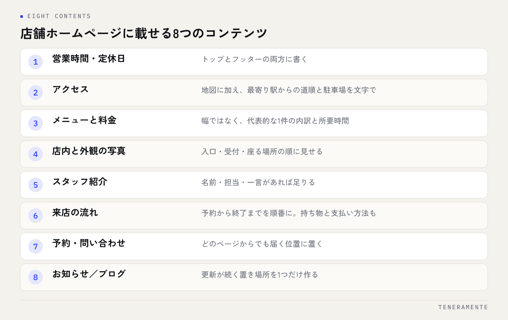

店舗のホームページを作るとき、何から載せればよいか迷う方は多くいます。デザインの好みを先に考えてしまいがちですが、店舗ホームページに必要なコンテンツは、お客様が来店前に調べることで決まります。この記事では、業種を問わず必ず入れたい8つのコンテンツと、その書き方を整理します。
📌 この記事の結論
店舗ホームページは「場所・やっていること・値段・人・入りやすさ」の5つの疑問に答えられていれば形になります。載せる量を増やすより、来店前に必ず調べられる情報を探さずに見つかる位置に置くほうが効きます。更新が続く置き場所は1つだけ作ってください。
01載せるコンテンツは、来店前の疑問から決まる
はじめての店を選ぶとき、人が調べるのは店の理念ではありません。今日や今週、そこへ行けるかどうかの判断材料です。具体的には、場所と行き方、何をしてくれるのか、いくらかかるのか、誰がやっているのか、そして入りやすそうかどうか。
このうちどれか1つが分からないと、その時点で別の店が候補になります。逆に言えば、5つがそろっていれば、写真の枚数やデザインの新しさは決定的な要素になりません。
ホームページを作るときに起きやすいのは、伝えたいこと（こだわり・歴史・想い）から構成を決めてしまうことです。伝えたいことは載せて構いませんが、順番は調べられることが先です。費用の考え方はホームページ制作の費用相場と失敗しない依頼方法にまとめています。
02店舗ホームページに必ず載せるべき8つのコンテンツ
業種が変わっても、必要なコンテンツはほぼ共通です。次の8つを基本形として考えてください。

- 営業時間・定休日
- アクセス（地図・最寄り駅・駐車場）
- メニュー／サービスと料金
- 店内と外観の写真
- スタッフ紹介
- 来店の流れ（はじめての方へ）
- 予約・問い合わせの導線
- お知らせまたはブログ
8つのうち前半の4つは事実の掲示、後半の4つは来店のためらいを外すためのものです。どちらかに偏ると、情報は十分なのに問い合わせが来ない、あるいは雰囲気は良いのに場所が分からないという状態になります。
03営業情報とアクセスは、探さずに見つかる位置に置く
営業時間と定休日は、トップページとフッターの両方に書いてください。1か所にしかないと、別のページから入ってきた方が探すことになります。
アクセスは、地図を埋め込むだけでは足りません。最寄り駅から徒歩で何分か、目印になる建物、駐車場があるかどうか、台数、近隣のコインパーキングを使う場合の案内までを文字で書きます。
画像の中に文字で書かない
営業時間や料金を画像の中だけに書くと、検索エンジンにも読み上げソフトにも内容が伝わりません。スマートフォンで拡大しないと読めないという問題も起きます。画像と同じ内容を、必ず文字でも書いてください。
臨時休業の告知場所も先に決めておきます。置き場所が決まっていないと、トップに手書きの画像を貼るような対応になり、更新が止まる原因になります。
04メニューと料金は、幅ではなく1件の例で見せる
料金を「3,000円〜」とだけ書くと、上限が分からないため問い合わせの前にためらいが生まれます。代表的な1件について、内訳と所要時間まで出すほうが伝わります。
| 伝わりにくい書き方 | 伝わる書き方 |
|---|---|
| 料金 3,000円〜 | 標準コース 3,000円（60分・税込）／追加の施術は1か所ごとに加算 |
| 各種メニューご用意 | メニューは3種類。所要時間30分・60分・90分から選べます |
| お気軽にご相談ください | ご相談は無料。お電話またはフォームで、当日のご希望時間をお知らせください |
| 詳しくは店頭で | オプションの一覧と料金は、このページの下に全て掲載しています |
右の列に特別な情報はありません。店頭で口頭で説明している内容を、そのまま文字にしているだけです。追加費用が発生する条件と、税込か税別かも必ず明記してください。
05人と流れを出すと、来店のためらいが減る
はじめての店に入りにくい理由は、値段よりも「どう振る舞えばよいか分からない」ことにあります。ここに効くのが、スタッフ紹介と来店の流れです。
スタッフ紹介は、名前（下の名前やニックネームでも構いません）、担当、一言があれば十分です。顔写真を出しにくい場合は、手元や作業中の後ろ姿でも印象は変わります。
来店の流れは、予約から当日の終了までを順番に書きます。予約の方法、到着したらどこに声をかけるか、所要時間、持ち物、支払い方法。あわせて店内の写真を、入口・受付・座る場所の順で載せると、来る前に様子が分かります。
06予約・問い合わせは、どのページからでも届くようにする
導線はトップページだけに置いても意味がありません。メニューを見終わった方、スタッフ紹介を読んだ方が、その場で連絡できる位置に置きます。
- スマートフォンでは、画面下に電話と予約のボタンを固定する
- 電話番号はタップで発信できるようにする
- フォームの入力項目は、名前・連絡先・希望日時の3つを基本にする
- 予約手段が複数あるときは、どれがいちばん早いかを書く
- 営業時間外に届いた場合、いつ返信するかを書いておく
項目を増やすほどフォームは離脱します。来店前に必要な情報だけを聞き、残りは当日でよいものと割り切ってください。
07更新が続く置き場所は、1つだけ作る
お知らせとブログの両方を作って、どちらも止まっているサイトは珍しくありません。最終更新が古いままだと、営業しているかどうかの判断にも影響します。
続けられる形は、置き場所を1つに絞ることです。臨時休業の案内、新しいメニュー、よく聞かれる質問への回答——書く内容を3種類くらいに決めておくと、ネタ探しから始めなくて済みます。
更新の頻度は多くなくて構いません。月に1〜2本でも、日付が新しければ役割を果たします。作り直しの判断基準はホームページのリニューアルのタイミングで解説しています。
SNSがあれば、ホームページは要らないのではないですか？
ページ数は何ページくらい必要ですか？
写真は自分で撮ったものでよいですか？
08まとめ：足りないものから1つずつ埋める
店舗ホームページに必要なのは、8つのコンテンツです。営業時間・アクセス・料金・写真で事実を示し、スタッフ紹介・来店の流れ・予約導線・お知らせでためらいを外す。この順に確認して、足りないものから埋めていくのがいちばん早い進め方です。
全部をいちどに仕上げる必要はありません。まず5ページで公開し、問い合わせで繰り返し聞かれたことを足していく形で十分に育ちます。
TENERAMENTEなら、この8つのコンテンツを前提に構成を組み、公開後はご自身で営業時間の変更や臨時休業のお知らせを画面から更新できる状態でお渡しします。更新のたびに制作会社へ依頼して待つ必要がなくなり、休業の告知が当日のうちに出せるようになります。HP/LP作成の進め方をご覧いただいたうえで、お問い合わせからお気軽にご相談ください。